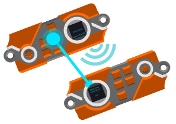

A LoRa mesh badge that maps who's where and what's happening.
Clamshell case, pre-soldered Cherry MX switches, keycaps, and encoder knob — ready to use out of the box.
Minimal case with unsoldered switch sockets. Bring your own Cherry MX-compatible switches and make it yours.
// LIMITED QUANTITY · DEF CON PICKUP ONLY

// CLICK A PHOTO TO ENLARGE
Lock onto GPS satellites and broadcast your coordinates, username, a status message, and a color over LoRa. Minimal to no setup required.
Every Wayfinder in range automatically relays pings it hears to badges further out. The mesh extends your reach well beyond direct radio line-of-sight.
A ring of LEDs acts as a live compass, rotating to point directly toward other badge holders.
Unable to load the 3D model. Please check your browser compatibility or internet connection.
Requires a WebGL-enabled browser.
// INTERACTIVE · DRAG TO ROTATE · SCROLL TO ZOOM
Third iteration. Battle tested since 2023. Refined through real-world testing at festivals, conventions, and outdoor events.
ESP32-S3 microcontroller offers WiFi, BLE, and USB connectivity along with a generous amount of GPIO to power a device with many bells and whistles.
Five Cherry MX-compatible mechanical switches paired with a detented rotary encoder. Designed to be as satisfying to use as it is functional.
LoRa mesh network with optional encrypted channels. ~500m node to node range. No existing infrastructure required.
Integrated GPS module for coordinates, magnetometer and dual IMU for gravity-adjusted heading and orientation. The LED ring points to where the action is happening.
A 128×128 OLED display, 61 WS2812B LEDs, haptic motor, and piezo buzzer. Designed to be picked up and used with minimal instruction.
The companion PWA handles initial setup: device settings, preloaded messages, and saved coordinates. Once configured, the Wayfinder operates fully standalone. No phone required in the field.
The badge firmware. Hardware init, application windows, LoRa message definitions, and the glue between the hardware and the library.
View on GitHub ↗The reusable ESP32 library underneath the badge. LoRa mesh, LED animations, Adafruit_GFX-based UI, GPS navigation, MessagePack filesystem, and RPC. Designed to be consumed by other projects.
View on GitHub ↗Wi-Fi RSSI-based positioning for indoor tracking where GPS can't reach.
Detailed write up on setup and how to use your Wayfinder.
Reserve yours online.
Pick it up at DEF CON 34. LIMITED QUANTITY · DEF CON PICKUP ONLY